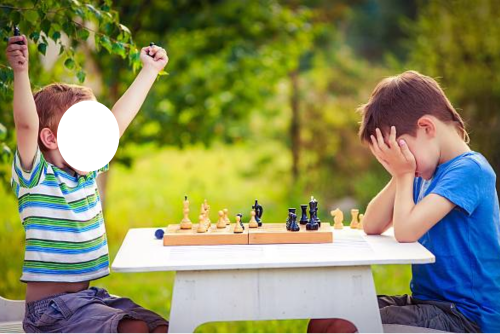
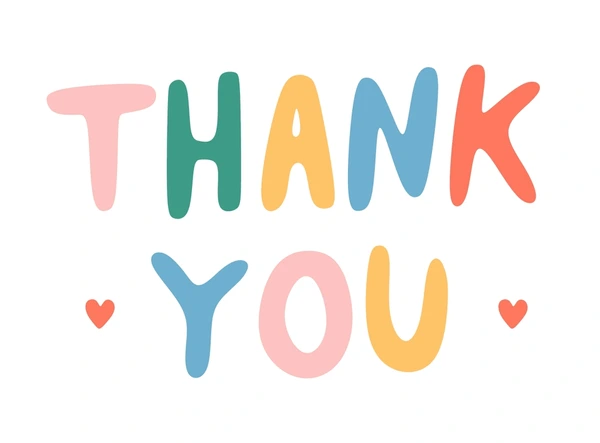

<!DOCTYPE html>
<html>
  <head>
    <title>My experiment</title> 
    <script src="jspsych/jspsych.js"></script>
    <script src="jspsych/plugin-html-keyboard-response.js"></script>
    <script src="jspsych/plugin-image-keyboard-response.js"></script>
    <script src="jspsych/plugin-html-button-response.js"></script>
    <script src="jspsych/plugin-image-button-response.js"></script>
    <script src="jspsych/plugin-survey-multi-choice.js"></script>
    <script src="jspsych/plugin-preload.js"></script>
    <link href="jspsych/jspsych.css" rel="stylesheet" type="text/css" />
  </head>
  <body></body>
  <script>
    var timeline = [];
    
    var jsPsych = initJsPsych({
      on_finish: function() {
        jsPsych.data.get().localSave('csv', 'mydata.csv');
        jsPsych.data.displayData();
      }
    });

    var preload = {
      type: jsPsychPreload,
      images: ['happy.png', 'sad.png', 'angry.png', '6basicemotions.png',
      'happy_img/happyChild1.png', 'happy_img/happyChild2.png', 'happy_img/happyChild3.png', 'happy_img/happyChild4.png', 
      'happy_img/happyChild5.png', 'happy_img/happyChild6.png', 'happy_img/happyChild7.png', 'happy_img/happyChild8.png',
      'sad_img/sadChild1.png', 'sad_img/sadChild2.png', 'sad_img/sadChild3.png', 'sad_img/sadChild4.png', 
      'sad_img/sadChild5.png', 'sad_img/sadChild6.png', 'sad_img/sadChild7.png', 'sad_img/sadChild8.png']
    };
    timeline.push(preload);
    
/////////////////////////////////////////////////////////////////////////////// welcome 

    const welcome_trial = {
      type: jsPsychHtmlButtonResponse,
      stimulus: `
      <p><strong>Welcome to the study!</strong></p>
      <p>Click the button below to continue to the 'Experiment Consent Form':</p>
      `,
      choices: ['Continue']
    };
    timeline.push(welcome_trial);
    
/////////////////////////////////////////////////////////////////////////////// consent form 

    const consent_trial = {
      type: jsPsychSurveyMultiChoice,
      questions: [
        {
          prompt:"<p>Your results will be completely anonymous.</p><p>Do you consent to having your data be used for study analysis purposes?</p>",
          name: 'DataConsent',
          options: ['Yes'],
          required: true
        }
        ],
      preamble: "<strong>Experiment Consent Form</strong>",
      button_label: 'Submit'

    };
    timeline.push(consent_trial);
    
/////////////////////////////////////////////////////////////////////////////// INSTRUCTIONS 

    const instructions_fixation = {
      type: jsPsychHtmlButtonResponse,
      stimulus: `<p><strong>Instructions</strong>
      <p style="color: white";>.</p>
      <p>At the start of every trial, a '+' sign will appear at the centre of the screen, telling you to focus on the centre.</p>
      <p style="color: white";>.</p>
      <p style="color: white";>.</p>
      <p><div style="font-size:60px;">+</div></p>
      <p style="color: white";>.</p>
      <p style="color: white";>.</p>

      <p>Click <strong>'Next'</strong> to continue to the next instructions:<p>
      `,
      choices: ['Next']
    };
    timeline.push(instructions_fixation);

    const instructions_scene = {
      type: jsPsychHtmlButtonResponse,
      stimulus: `<p>After, a picture will appear of a scene for a couple of seconds. One of the people's faces will be covered by a white circle like this:</p>
      <p></img></p>
      <p>Think about what is happening in the scene and what facial expression is behind the white circle.</p>
      <p style="color: white";>.</p>
      <p>Click <strong>'Next'</strong> to continue to the next instructions:<p>
      `,
      choices: ['Next']
    };
    timeline.push(instructions_scene);

    const instructions_response = {
      type: jsPsychHtmlButtonResponse,
      stimulus: `<p>The screen will automatically change to the response screen.</p>
      <p style="color: white";>.</p>
      <p>You will have the option of choosing between these 3 different emojis:</p>
      <p></img></p>
      <p>Press the key [f, g, h] that corresponds to the emoji you think <strong>BEST represents the covered face</strong> from the last scene.</p>
      <p style="color: white";>.</p>
      <p>Click <strong>'Next'</strong> to continue to the next instructions:<p>
      `,
      choices: ['Next']
    };
    timeline.push(instructions_response);

    const instructions_conclusion = {
      type: jsPsychHtmlButtonResponse,
      stimulus: `<p>You will do this for multiple trials.</p>
      <p>Try to respond as soon as you know the answer.</p>
      <p style="color: white";>.</p>
      <p>Once all trials are completed, you will be asked to fill out a quick survey.</p>
      <p>All responses will be completely anonymous.</p>


      <p style="color: white";>.</p>
      <p>Click <strong>'Start'</strong> to start the experiment!:<p>
      `,
      choices: ['Start'],
      post_trial_gap: 2000
    };
    timeline.push(instructions_conclusion);
  
////////////////////////////////////////////////////////////////////////////// fixation

    var fixation = {
      type: jsPsychHtmlKeyboardResponse,
      stimulus: '<div style="font-size:60px;">+</div>',
      choices: "NO_KEYS",
      trial_duration: 2000,
      data: {task: 'fixation'}
    };
    
////////////////////////////////////////////////////////////////////////////// test trials

// dictionary

    const stimuli_sceneEmoji = [
      {stimulus: 'happy_img/happyChild1.png', correct_emoji: 'happy.png', correct_response: 'f', emoji: '6basicemotions.png'},
      {stimulus: 'happy_img/happyChild2.png', correct_emoji: 'happy.png', correct_response: 'f', emoji: '6basicemotions.png'},
      {stimulus: 'happy_img/happyChild3.png', correct_emoji: 'happy.png', correct_response: 'f', emoji: '6basicemotions.png'},
      {stimulus: 'happy_img/happyChild4.png', correct_emoji: 'happy.png', correct_response: 'f', emoji: '6basicemotions.png'},
      {stimulus: 'happy_img/happyChild5.png', correct_emoji: 'happy.png', correct_response: 'f', emoji: '6basicemotions.png'},
      {stimulus: 'happy_img/happyChild6.png', correct_emoji: 'happy.png', correct_response: 'f', emoji: '6basicemotions.png'},
      {stimulus: 'happy_img/happyChild7.png', correct_emoji: 'happy.png', correct_response: 'f', emoji: '6basicemotions.png'},
      {stimulus: 'happy_img/happyChild8.png', correct_emoji: 'happy.png', correct_response: 'f', emoji: '6basicemotions.png'},
      {stimulus: 'sad_img/sadChild1.png', correct_emoji: 'sad.png', correct_response: 'g', emoji: '6basicemotions.png'},
      {stimulus: 'sad_img/sadChild2.png', correct_emoji: 'sad.png', correct_response: 'g', emoji: '6basicemotions.png'},
      {stimulus: 'sad_img/sadChild3.png', correct_emoji: 'sad.png', correct_response: 'g', emoji: '6basicemotions.png'},
      {stimulus: 'sad_img/sadChild4.png', correct_emoji: 'sad.png', correct_response: 'g', emoji: '6basicemotions.png'},
      {stimulus: 'sad_img/sadChild5.png', correct_emoji: 'sad.png', correct_response: 'g', emoji: '6basicemotions.png'},
      {stimulus: 'sad_img/sadChild6.png', correct_emoji: 'sad.png', correct_response: 'g', emoji: '6basicemotions.png'},
      {stimulus: 'sad_img/sadChild7.png', correct_emoji: 'sad.png', correct_response: 'g', emoji: '6basicemotions.png'},
      {stimulus: 'sad_img/sadChild8.png', correct_emoji: 'sad.png', correct_response: 'g', emoji: '6basicemotions.png'},
      {stimulus: 'angry_img/angryChild1.png', correct_emoji: 'angry.png', correct_response: 'h', emoji: '6basicemotions.png'},
      {stimulus: 'angry_img/angryChild2.png', correct_emoji: 'angry.png', correct_response: 'h', emoji: '6basicemotions.png'},
      {stimulus: 'angry_img/angryChild3.png', correct_emoji: 'angry.png', correct_response: 'h', emoji: '6basicemotions.png'},
      {stimulus: 'angry_img/angryChild4.png', correct_emoji: 'angry.png', correct_response: 'h', emoji: '6basicemotions.png'},
      {stimulus: 'angry_img/angryChild5.png', correct_emoji: 'angry.png', correct_response: 'h', emoji: '6basicemotions.png'},
      {stimulus: 'angry_img/angryChild6.png', correct_emoji: 'angry.png', correct_response: 'h', emoji: '6basicemotions.png'},
      {stimulus: 'angry_img/angryChild7.png', correct_emoji: 'angry.png', correct_response: 'h', emoji: '6basicemotions.png'},
      {stimulus: 'angry_img/angryChild8.png', correct_emoji: 'angry.png', correct_response: 'h', emoji: '6basicemotions.png'}
    ];

    const test_scene = {
      type: jsPsychImageKeyboardResponse,
      stimulus: jsPsych.timelineVariable('stimulus'),
      choices: "NO_KEYS",
      trial_duration: 7000,
      data: {
        task: 'scene',
        correct_response: jsPsych.timelineVariable('correct_emoji')
      }
    };

    const test_emoji = {
      type: jsPsychImageKeyboardResponse,
      stimulus: jsPsych.timelineVariable('emoji', 'correct_emoji'),
      choices: ['f', 'g', 'h'],
      data: {
        task: 'response',
        correct_response: jsPsych.timelineVariable('correct_response')
      },
      on_finish: function(data){
        if(jsPsych.pluginAPI.compareKeys(data.response, data.correct_response)){
          data.correct = true;
        } else {
          data.correct = false; 
        }
        }
    };


    var test_procedure = {
      timeline: [fixation, test_scene, test_emoji],
      timeline_variables: stimuli_sceneEmoji, 
      randomize_order: true
    };
    timeline.push(test_procedure);

///////////////////////////////////////////////////////////////////////////// ADHD survey

    const ADHD_survey_instructions = {
      type: jsPsychHtmlButtonResponse,
      stimulus: `<p><strong>Congratulations! You have completed the first part of the experiment!</strong></p>
      <p>This last part is a survey on how you work in the classroom and at home.</p>
      <p><strong>Steps:</strong></p>

      <p>1) Read the statement.</p>

      <p>2) If you think that the statement describes you, click <strong>'Agree'</strong></p>
      <p>If you think that the statement DOES NOT describe you, click <strong>'Disagree'</strong>.</p>
      
      <p>3) Click the 'Next' button to move on to the next set of questions</p>
      <p>4) At the end of the survey, click the 'Submit Survey' button when you have completed all the questions</p>

      `,
      choices: ['Continue to Survey']
    };
    timeline.push(ADHD_survey_instructions);

// inattention questions 
    const IA_questions = [
          {
            prompt: "I often get distracted when someone is speaking to me (e.g., my parents, teacher, and so on).", 
            name: 'inattentionA', 
            options: ['Agree', 'Disagree'], 
            required: true
          },
          {
            prompt: "I often forget to bring the things I need for school when I leave home or forget to bring stuff home from school (e.g., homework, pencil, other school supplies).", 
            name: 'inattentionB', 
            options: ['Agree', 'Disagree'], 
            required: true
          },
          {
            prompt: "People often tell me that I am forgetful.", 
            name: 'inattentionC', 
            options: ['Agree', 'Disagree'], 
            required: true
          },
          {
            prompt: "I am always focused and can stay on task and follow the rules until the work is done.", 
            name: 'inattentionD_reverse', 
            options: ['Agree', 'Disagree'], 
            required: true
          },
          {
            prompt: "I’m organized and can hand in all my schoolwork and chores done on time.", 
            name: 'inattentionE_reverse', 
            options: ['Agree', 'Disagree'], 
            required: true
          },
          {
            prompt: "I am able to work on different tasks and activities for long periods of time.", 
            name: 'inattentionF_reverse', 
            options: ['Agree', 'Disagree'], 
            required: true
          }, 
          ];

    // Shuffles and pops first n elements of Array
    // Returns pair, first element is n random popped elements, second is remaining Array
    function shuffle_and_pop_n(arr, n) {
      shuffled_arr = jsPsych.randomization.shuffle(arr);
      return [shuffled_arr.slice(0,n), shuffled_arr.slice(n)];
    }
    
    var result = shuffle_and_pop_n(Array.from(IA_questions), 3);
    const first_3_ques = result[0];
    var remaining = result[1];
    
    const inattention_survey_p1 = {
        type: jsPsychSurveyMultiChoice,
        questions: first_3_ques,
          repetitions: 3,
      preamble: "<strong>Survey (part 1/5)</strong>",
      button_label: 'Next',
      data: {
        task: 'inattention_index'
      }
    };

    const inattention_survey_p2 = {
        type: jsPsychSurveyMultiChoice,
        questions: Array.from(remaining),
          repetitions: 3,
      preamble: "<strong>Survey (part 2/5)</strong>",
      button_label: 'Next',
      data: {
        task: 'inattention_index'
      }
    };

// hyperactivity + impulsivity
    const questions_HI = [
          {
            prompt: "I fidget a lot when I am sitting.", 
            name: 'hyperactivityA', 
            options: ['Agree', 'Disagree'], 
            required: true
          }, 
          {
            prompt: "I cannot wait my turn in a conversation and have to respond to someone right away before they finish speaking.", 
            name: 'hyperactivityB', 
            options: ['Agree', 'Disagree'], 
            required: true       
          },
          {
            prompt: "I need to be up and moving and can’t sit for an entire class.", 
            name: 'hyperactivityC', 
            options: ['Agree', 'Disagree'], 
            required: true
          },
          {
            prompt: "I only speak in class when I am called on and don’t talk over others.", 
            name: 'hyperactivityD_reverse', 
            options: ['Agree', 'Disagree'], 
            required: true
          },
          
          {
            prompt: "My teacher doesn’t have to tell me to sit back in my seat when I am not allowed to be up or lower my voice during class time.", 
            name: 'hyperactivityE_reverse', 
            options: ['Agree', 'Disagree'], 
            required: true
          },
          {
            prompt: "I will wait my turn when waiting in line for something and don’t try to cut in front of others.", 
            name: 'hyperactivityF_reverse', 
            options: ['Agree', 'Disagree'], 
            required: true
          },
          ];

    var resultHI = shuffle_and_pop_n(Array.from(questions_HI), 3);
    const first_3_quesHI = resultHI[0];
    var remainingHI = resultHI[1];
    
    const HI_survey_p1 = {
        type: jsPsychSurveyMultiChoice,
        questions: first_3_quesHI,
          repetitions: 3,
      preamble: "<strong>Survey (part 3/5)</strong>",
      button_label: 'Next',
      data: {
        task: 'HI_index',
      }
    };

    const HI_survey_p2 = {
        type: jsPsychSurveyMultiChoice,
        questions: Array.from(remainingHI),
          repetitions: 3,
      preamble: "<strong>Survey (part 4/5)</strong>",
      button_label: 'Next',
      data: {
        task: 'HI_index'
      }

    };
    
    var surveyIA_procedure = {
      timeline: [inattention_survey_p1, inattention_survey_p2],
      timeline_variables: [IA_questions], 
      randomize_order: false
    };
    timeline.push(surveyIA_procedure);

    var surveyHI_procedure = {
      timeline: [HI_survey_p1, HI_survey_p2],
      timeline_variables: [IA_questions], 
      randomize_order: false
    };
    timeline.push(surveyHI_procedure);

    const gender = {
        type: jsPsychSurveyMultiChoice,
        questions: [
          {prompt: `Gender:`,
          name: 'gender', 
          options: ['Girl', 'Boy'], 
          required: true}],
      preamble: "<strong>Survey (part 5/5)</strong>",
      button_label: 'Submit Survey',
      data: {
        task: 'gender'
      }

    };

    timeline.push(gender);

/////////////////////////////////////////////////////////////////////////// thank you

    const thankyou_trial = {
      type: jsPsychHtmlButtonResponse,
      stimulus: `
      <p>Thank you for participating in this study!</p>
      <div></img></div>
      <p>Click the 'Exit' button below to finish the experiment:</p>`,
      choices: ['Exit']
    };
    timeline.push(thankyou_trial);

/////////////////////////////////////////////////////////////////////////// Debrief block
    
        
        var trials = jsPsych.data.get().filter({task: 'correct'});               // getting all FER trials
        var correct_trials = trials.filter({correct: 'TRUE'});                      // getting all correctly matched FER trials
        var accuracy = Math.round(correct_trials.count() / trials.count() * 100); // % accuracy on FER trials overall
        var rt = Math.round(correct_trials.select('rt').mean());
        
        // trails correct for each emotion
        var happy_correct = correct_trials.filter({correct_response: 'f'});
        var sad_correct = correct_trials.filter({correct_response: 'g'});
        var angry_correct = correct_trials.filter({correct_response: 'h'});
        
        // mean rt for each emotion
        var happy_rt = Math.round(happy_correct.select('rt').mean());
        var sad_rt = Math.round(sad_correct.select('rt').mean());
        var angry_rt = Math.round(angry_correct.select('rt').mean());
        
    var debrief_block = {
      type: jsPsychHtmlKeyboardResponse,
      stimulus: `<p>trials = ${trials}</p>
      <p>happy_correct = ${happy_correct.count()}, sad_correct = ${sad_correct.count()}, angry_correct = ${angry_correct.count()}</p>
      <p>happy_rt = ${happy_rt}ms, sad_rt = ${sad_rt}ms, angry_rt = ${angry_rt}ms</p>
      `
    };
    //timeline.push(debrief_block);

    
    jsPsych.run(timeline);

  </script>
</html>
